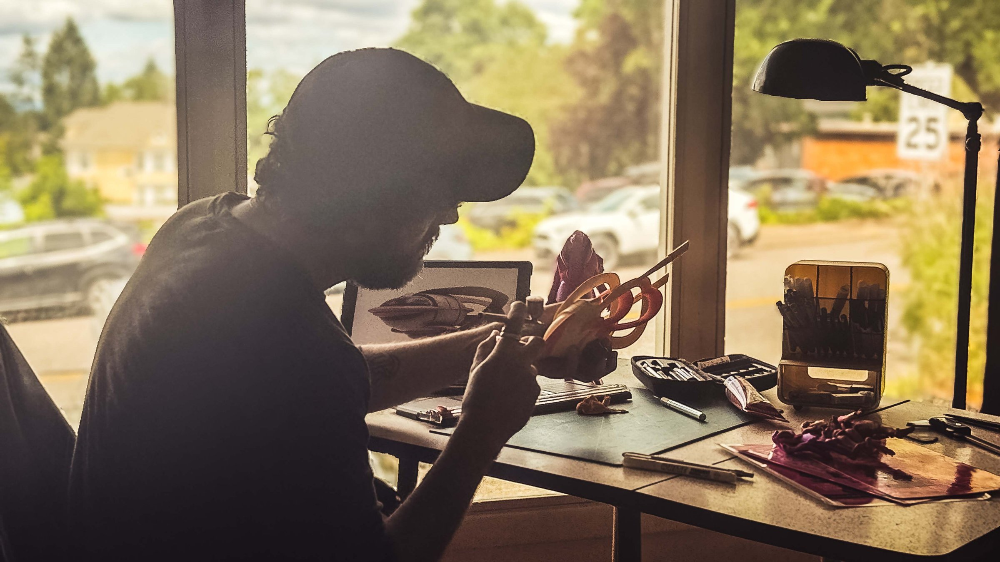
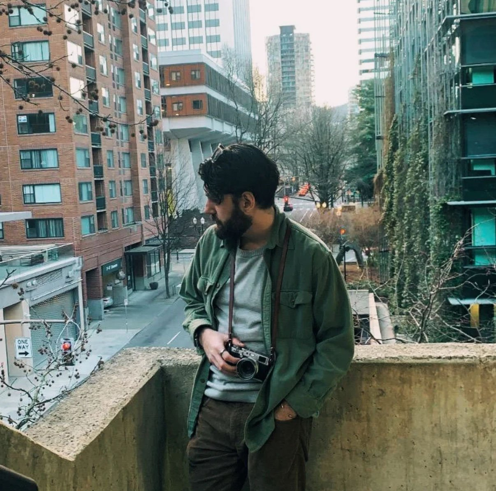
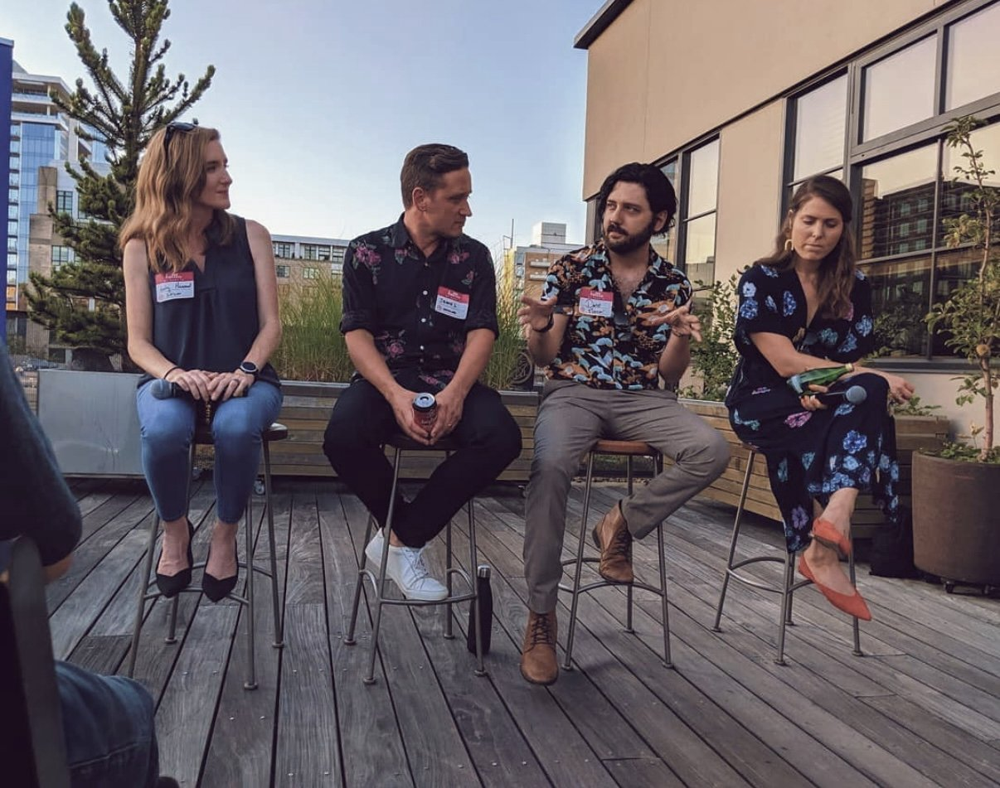
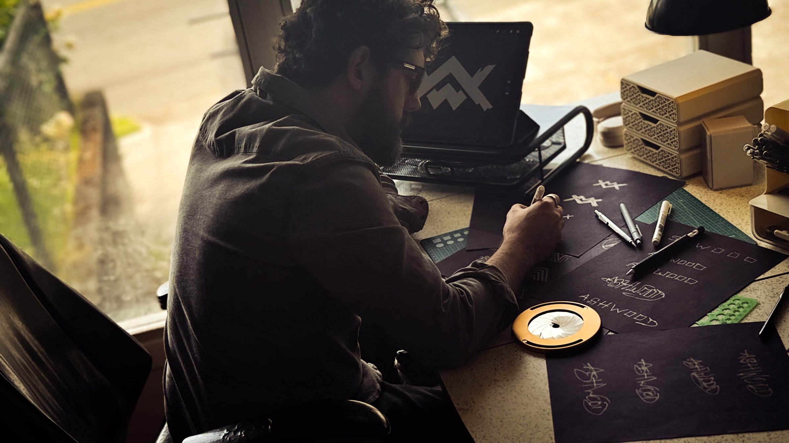
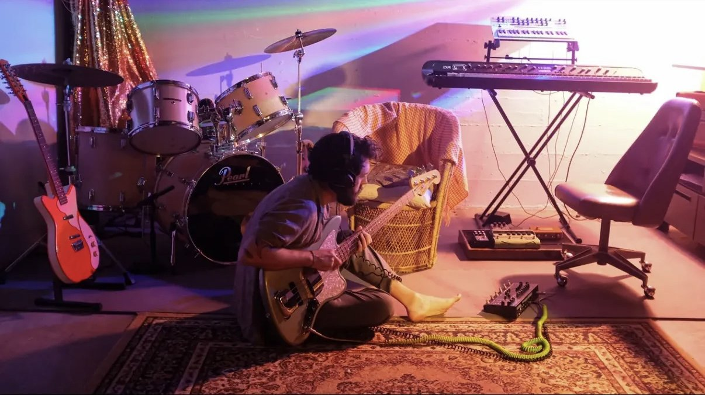

Born to two artists, my mother a professional typesetter, seamstress, and crafter of teddy bears and porcelain dolls; my father a professional graphic artist and woodworker, there was nearly zero chance I would live a life without art in it.
Long before I was doing any of this professionally, I was redesigning album covers, Photoshopping myself into movie posters, drawing comics, and scanning my sketches into the computer to make insane creations. By the time I was in high school graphics class, my teacher would have me lead the class on aspects of the program he wasn’t yet aware of. I designed my class’s graduation apparel lines and saw my work get screen printed and distributed to the whole class. That was my first real clue I might have a future in this.

Officially, I’m an Art Director, designer, illustrator, and creative problem solver. Unofficially? I help ambitious ideas find their form. Sometimes that’s a logo, a wine brand, a museum exhibit, a comedy show, a concert poster, and sometimes it’s an entire fictional universe. The medium changes. The process doesn’t.


I think we’re entering a world where making things is easier than ever and originality is harder than ever. Tools can automate execution, but they can’t replace perspective and taste. We need artists and designers willing to have an actual point of view. At least it’s a direction. At least it tells a story.

After all these years, I still do this because it’s become both a career path and a soul path. The projects get more interesting. The trust deepens. The opportunity to bring more of myself into the work continues to grow. No matter how hard things get, I still get to wake up every day and be myself.
